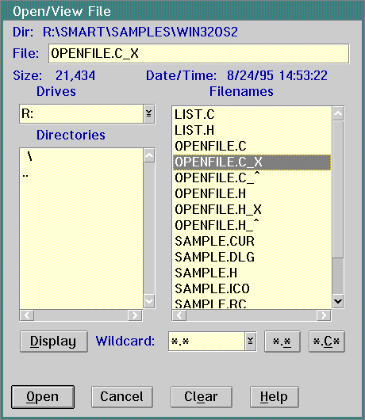

Note: These steps tell you how to migrate Windows 32-bit code only.
Before migrating source code, ensure the correct tables are loaded:
The SMART Filename in the SMART Table Filename group box should be WIN32OS2.TBL. The User UDMD Directory in the User UDMD Migration Data Base Directory group box should be SMART\SMARTAUX\DAPIE32.
a.
a.
Select the converted files.
Click on the Open push button to view the code.